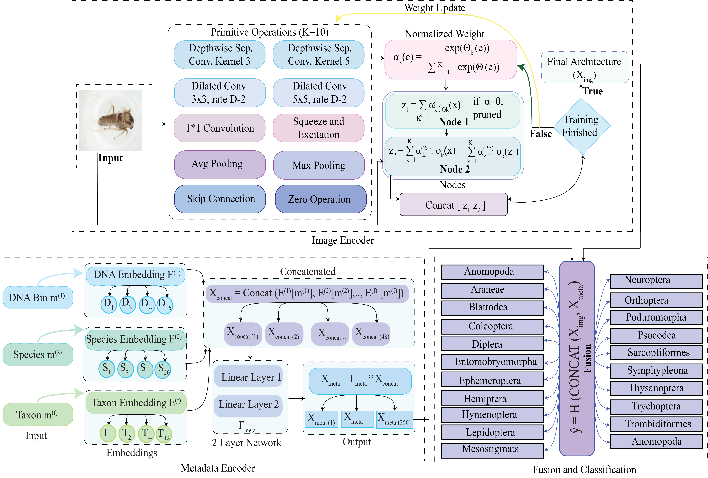

Focused on computer vision, machine learning, and real-world systems. My interests include scalable AI, efficient deep learning, and visual intelligence in healthcare, sports analytics, and satellite imagery.
United International University, 2020–2024
Thesis: A Computer Vision Approach for Illegal Bowling Action Detection in Cricket
Supervisor: Prof. Swakkhar Shatabda





Fractures, especially in the cervical spine, pose significant challenges for diagnosis and treatment. As the incidence of these injuries rises and traditional diagnostic methods have limitations, there is an urgent need for more efficient and accurate detection techniques. This study addresses these challenges by proposing a comprehensive approach to automate fracture detection and classification of cervical spine injuries from CT scans. We have combined object detection models and a novel attention mechanism-based Convolutional Neural Network (CNN) titled (VertNet-10) to detect cervical spinal fractures and classify vertebrae from axial plane CT images. Our methodology involves refining the YOLOv8 object detection model and proposing a deep CNN model with attention blocks. Our modified YOLOv8 achieved a Mean Average Precision (mAP) of 93 % in fracture detection, outperforming existing models. The CNN model achieved an accuracy of 99.55 % in classifying cervical vertebrae, with 100 % accuracy for some vertebrae. Furthermore, we successfully generated activation maps to explain the model’s classification process, enhancing model explainability. By combining these two modules, our proposed approach offers a promising solution for automating fracture detection and cervical vertebrae classification. Integrating advanced imaging algorithms and attention mechanisms significantly improves diagnostic precision and efficiency. This study emphasizes the potential of AI-driven systems in augmenting radiological diagnosis and ultimately improving patient care in cervical spine injuries.
Significant threats to ecological equilibrium and sustainable agriculture are posed by the extinction of animal species and the subsequent effects on farms. Farmers face difficult decisions, such as installing electric fences to protect their farms, although these measures can harm animals essential for maintaining ecological equilibrium. To tackle these essential issues, our research introduces an innovative solution in the form of an object-detection system. In this research, we designed and implemented a system that leverages the ESP32-CAM platform in conjunction with the YOLOv8 object-detection model. Our proposed system aims to identify endangered species and harmful animals within farming environments, providing real-time alerts to farmers and endangered wildlife by integrating a cloud-based alert system. To train the YOLOv8 model effectively, we meticulously compiled diverse image datasets featuring these animals in agricultural settings, subsequently annotating them. After that, we tuned the hyperparameter of the YOLOv8 model to enhance the performance of the model. The results from our optimized YOLOv8 model are auspicious. It achieves a remarkable mean average precision (mAP) of 92.44% and an impressive sensitivity rate of 96.65% on an unseen test dataset, firmly establishing its efficacy. After achieving an optimal result, we employed the model in our IoT system and when the system detects the presence of these animals, it immediately activates an audible buzzer. Additionally, a cloud-based system was utilized to notify neighboring farmers effectively and alert animals to potential danger. This research’s significance lies in its potential to drive the conservation of endangered species while simultaneously mitigating the agricultural damage inflicted by these animals.
Accurate lung nodule segmentation and malignancy assessment are crucial for early cancer detection and treatment planning but are challenging due to small sizes and diverse shapes. Current methods face challenges due to visual similarity to surrounding structures, weak boundary contrast and treat segmentation and classification separately. To overcome these limitations, this study proposes DPMT-Net, a Dual-Prompt Attention Multi-Task 3D Network that integrates dual prompt encoding for task-specific guidance and clinical feature integration within a unified multi-task architecture for lung nodule segmentation and malignancy classification. The dual-prompt strategy employs a basic encoder with spatial point prompts for segmentation guidance and an enhanced encoder incorporating anatomical embeddings with multi-head self-attention for malignancy and localization predictions, enabling task-adaptive modulation through a shared encoder-decoder backbone. The framework incorporates complementary attention mechanisms for texture-sensitive malignancy assessment and centroid-focused spatial attention for precise localization. Extensive evaluation on the LIDC-IDRI dataset demonstrates that our framework achieves a Dice coefficient of 88.74%, Intersection over Union of 81.21%, malignancy classification accuracy of 82.25% across benign (82.39%), indeterminate (85.11%), and malignant (76.53%) categories, and anatomical localization accuracy of 98.05%. These results confirm the effectiveness of our prompt-guided multi-task approach in providing anatomically consistent, clinically interpretable, and accurate lung nodule analysis.
Satellite image generation is critical in disaster management, environmental monitoring, and urban planning applications. Traditional methods of change detection often face challenges related to noise and atmospheric conditions, while recent deep learning methodologies, including Generative Adversarial Networks and transfer learning, typically require substantial computational resources. This study presents a novel, lightweight, Change-Adaptive Dual-Path Encoder (CADE) designed to mitigate these challenges, enabling the efficient generation of predictive satellite images with reduced resource demands. Our model enhances image generation capabilities by utilizing a Residual block in a separated dual encoder and attention module, even with limited labeled data. Additionally, semi-supervised training significantly strengthens the model’s ability to learn from small datasets. CADE achieved a PSNR of 30.45 and an SSIM of 0.80 when tested on the LEVIR-CD dataset, surpassing top diffusion and GAN models. For DSFIN-CD, a PSNR of 28.93 and an SSIM of 0.76 were achieved. Furthermore, CADE obtained a 92.81% F1-score and 87.72% IoU on LEVIR-CD, and a 91.44% F1-score and 85.02% IoU on DSFIN-CD, all while using fewer parameters and reducing computational costs compared to other methods. This study contributes to Artificial Intelligence by proposing a semi-supervised encoder-decoder architecture that utilizes both labeled and unlabeled satellite imagery for temporal understanding and predictive modeling. Our findings indicate that CADE is precise and computationally efficient, showing that it is suitable for low-resource remote sensing uses. This semi-supervised method minimizes dependence on extensive annotated datasets as well. The use of this technology in engineering is pivotal for improving autonomous satellite systems that are responsible for effective Earth observation, evaluating natural disasters, and planning for sustainable environmental management.
In healthcare, it is essential for any Large Language Model (LLM)-generated output to be reliable and accurate, particularly in cases involving decision-making and patient safety. However, the outputs are often unreliable in such critical areas due to the risk of hallucinated outputs from the LLMs. To address this issue, we propose a fact-checking module that operates independently of any LLM, along with a domain-specific summarization model designed to minimize hallucination rates. Our model is fine-tuned using Low-Rank Adaptation (LoRA) on the MIMIC-III dataset and is paired with the fact-checking module, which uses numerical tests for correctness and logical checks at a granular level through discrete logic in natural language processing (NLP) to validate facts against electronic health records (EHRs). We trained the LLM on the full MIMIC-III dataset. For evaluation of the fact-checking module, we sampled 104 summaries, extracted them into 3786 propositions, and used these as facts. The fact-checking module achieves a precision of 0.8904, a recall of 0.8234, and an F1-score of 0.8556. Additionally, the LLM summary achieves a ROUGE-1 score of 0.5797 and a BERTScore of 0.9120 for summary quality.